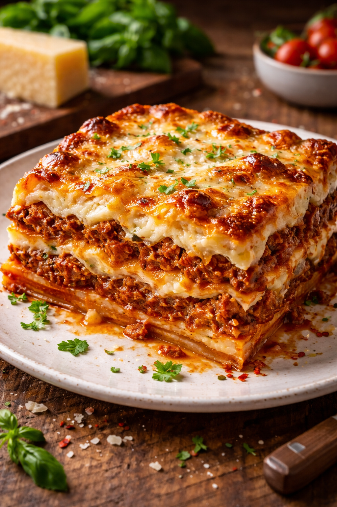

Lasagna

Finished Lasagna
Delicious Italian dish with tons of cheese and deliciousness richness!
Ingredients:
Pasta & Base
- Lasagna noodles (12–16 sheets)
- Olive oil
Meat Sauce (Ragù)
- Ground beef (or beef + pork mix)
- Onion
- Garlic
- Crushed tomatoes
- Tomato paste
- Tomato sauce
- Salt
- Black pepper
- Oregano
- Basil
- Red pepper flakes (optional)
Cheese Layer
- Ricotta cheese
- Mozzarella cheese (shredded)
- Parmesan cheese (grated)
- Egg (to mix with ricotta)
- Parsley
Béchamel
- Butter
- Flour
- Milk
- Nutmeg
- Salt
Steps:
- Preheat the oven to 180°C (350°F).
- Cook the lasagna noodles according to the package instructions, then drain and set aside.
- In a pan, heat olive oil and sauté chopped onion and garlic until fragrant.
- Add the ground beef and cook until browned.
- Stir in crushed tomatoes, tomato paste, tomato sauce, salt, pepper, oregano, basil, and red pepper flakes. Let the sauce simmer for about 15 minutes.
- In a bowl, mix ricotta cheese, egg, parsley, and a little salt.
- Spread a thin layer of meat sauce in a baking dish, then add a layer of lasagna noodles.
- Add a layer of the ricotta mixture, followed by mozzarella cheese and more meat sauce.
- Repeat the layers (noodles, ricotta mixture, sauce, mozzarella) until the ingredients are used.
- Finish with a layer of mozzarella and grated Parmesan cheese on top.
- Bake for about 30–40 minutes until the cheese is melted and golden.
- Let the lasagna rest for about 10 minutes before serving.